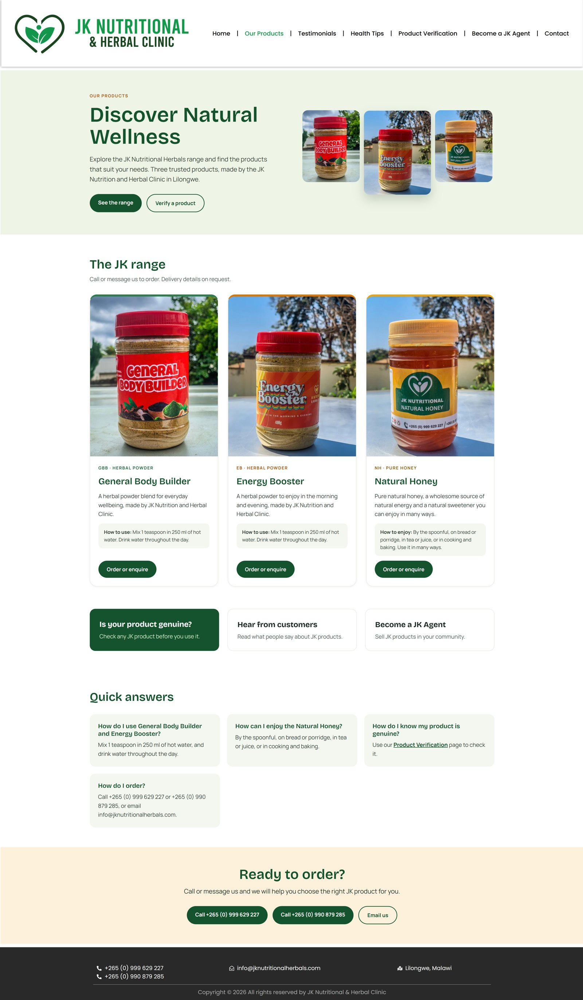
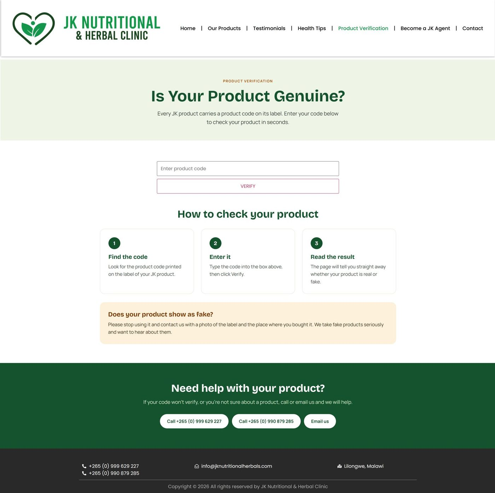
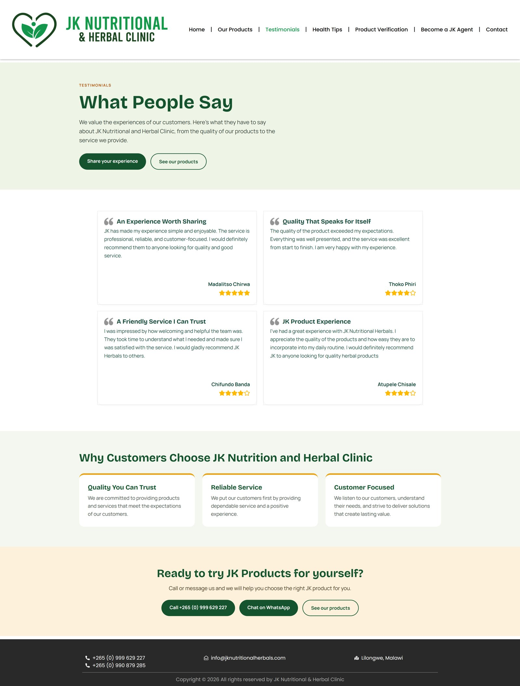
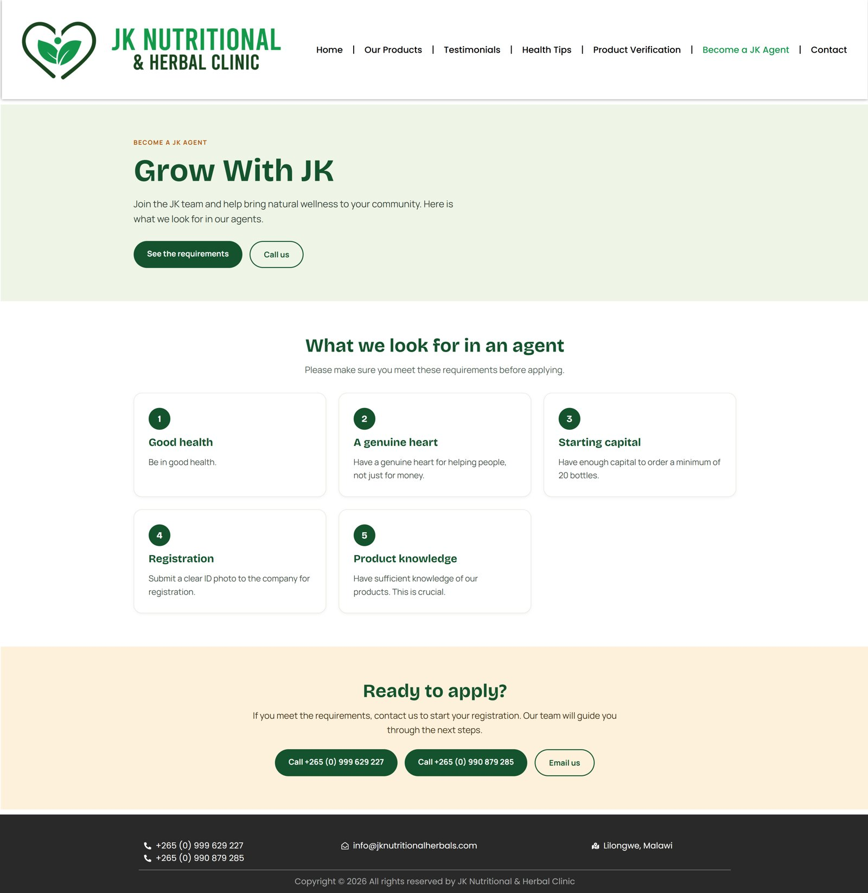

JK Nutritional and Herbal Clinic website
A full rebuild of a herbal products company's website, page by page, so customers across five countries can find products, check they are genuine and order with confidence.




The problem
The old site was hard to use. Health tips sat in one long list of more than 80 posts, products were hard to find, and nothing helped customers spot the counterfeit products that hurt both the brand and buyers.
The company sells through agents in five countries, so the website had to build trust on its own, work well on phones and make it easy to become an agent.
What I built
Product verification
Customers type the code from the label and see straight away whether the product is genuine or fake.
Health tips library
A filterable grid by topic, including a new women's health section, replacing a long plain list.
Products page
Clear cards for each product with directions for use, linking to verification, testimonials and agent sign-up.
Agent recruitment
A Become a JK Agent page with clear requirements and a direct way to apply by call or email.
Testimonials that update themselves
Styled so new customer reviews appear automatically, with no code changes needed.
A new home page
A hero where the product jars fade in one after another, leading customers straight to the products.
How I worked
Went through every page with the client to see what confused customers and what was missing.
Redesigned and published each page in turn, so the live site improved every week instead of waiting for a big launch.
Agreed content rules with the client, such as keeping herbal ingredients private and not showing prices online.
Built pages the client's team can update themselves, with plugins handling testimonials and posts.